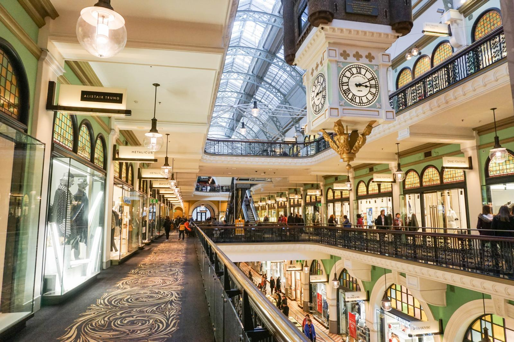
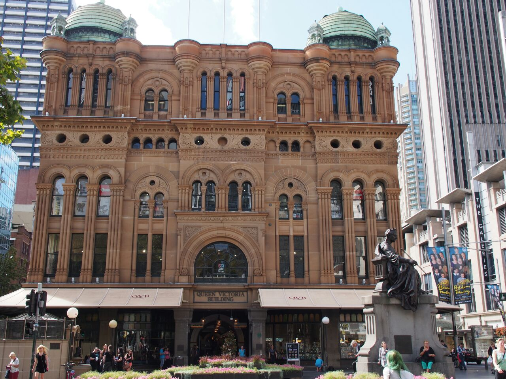
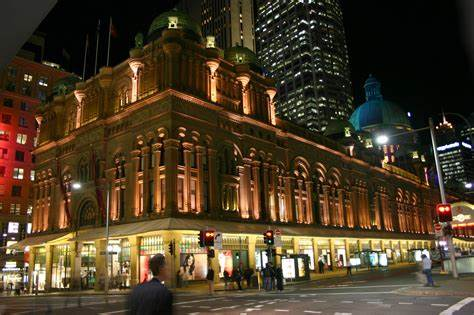
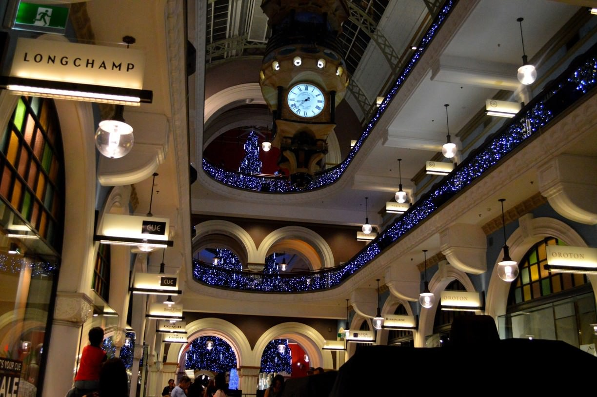

About us
   Pine City Mall is the ultimate fashion, entertainment and dining destination in Durban. With over 430+ stores, 70 eateries and a host of exciting entertainment, visitors are spoilt for choice!
At Pine City Mall you will find local South African retail, popular international brands such as Zara, Forever New, Cotton On, Superdry, Gant, and everything in between. Gateway also features an 18 cinema Ster Kinekor complex, IMAX Theatre, Funtubbles Family Funfair, Electric Avenue bowling, Action Karting, be.UP Park and much much more!Prepare your senses for a world class experience at one of the largest shopping centres in the Southern Hemisphere.
Facilities:
BABY CHANGING STATIONS, DISABILITY FACILITIES, PAY TOILETS
PARKING
The Workshop has 1 251 parking bays, including 350 open parking, 895 undercover parking and 6 disabled parking bays.
SECURITY
The centre is monitored by CCTV and competent security officers 24 hours a day. Security can be contacted via the centre’s switchboard number after hours. All parking bays are patrolled continuously to ensure the safety and security of all customers, staff and those visiting the centre.